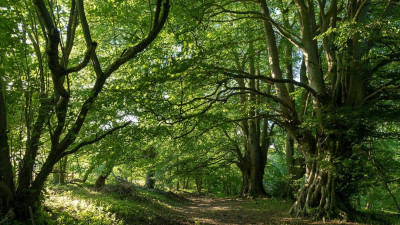
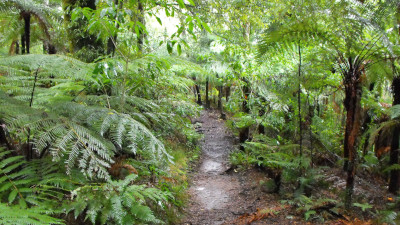

Capital Green Space Project 2022
Flood Management in Edinburgh
Home
Findings
Further Information
Team
Capital Green Space Project 2022
Flood Management in Edinburgh
Come back to see our interactive map very soon!
Proposed Greenspace
Woodland

Meadow
Livingwillow
Bush
